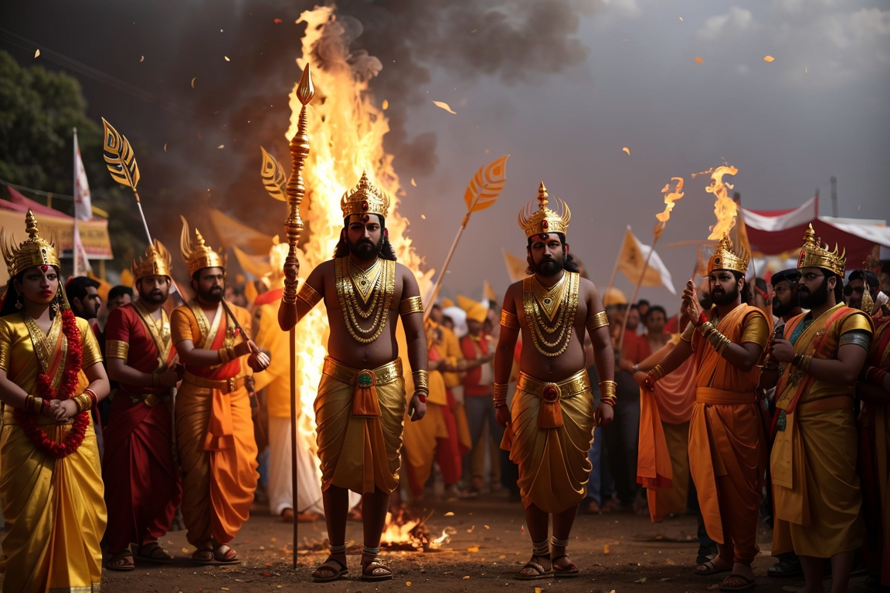
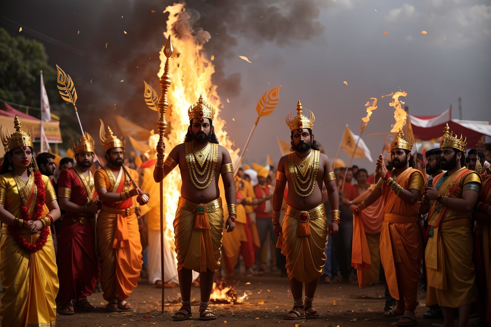
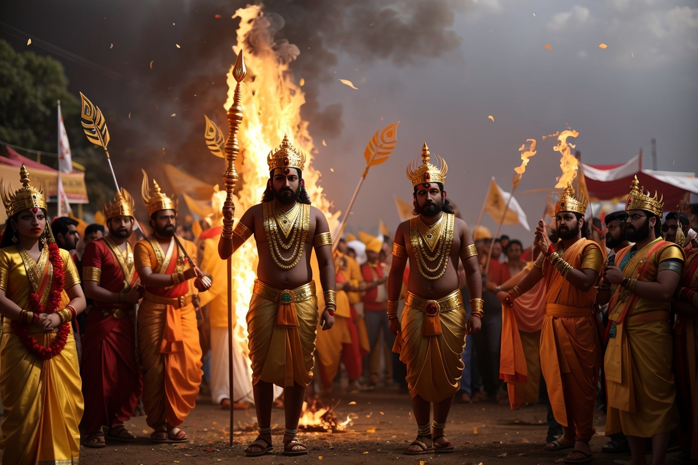

Himachal Pradesh, nestled in the pristine Himalayan region of northern India, boasts a rich tapestry of history, a vibrant culture, and breathtaking attractions. The state's history is deeply rooted in its mountainous terrain, with tales of ancient tribes and kingdoms dating back centuries. Himachal's culture is a vibrant blend of Hindu and Tibetan influences, evident in its festivals, handicrafts, and religious practices. Festivals like Diwali, Dussehra, and Losar are celebrated with great fervor. Traditional crafts such as handwoven textiles, intricate jewelry, and vibrant paintings reflect the artistic talents of the locals. The main attractions of Himachal Pradesh are its natural wonders. The hill station of Shimla, once the summer capital of British India, offers colonial-era charm and panoramic views. Manali, nestled in the Kullu Valley, is a haven for adventure enthusiasts and a gateway to the mesmerizing Spiti Valley. The picturesque Kullu Valley itself is dotted with orchards and quaint villages. Dharamshala, home to the Dalai Lama, showcases Tibetan culture and spirituality. Himachal's national parks and wildlife sanctuaries, including Great Himalayan National Park, provide opportunities for wildlife enthusiasts and trekkers. The state's serene lakes, lush meadows, and pristine rivers make it an ideal destination for nature lovers and those seeking solace in the lap of the Himalayas.
